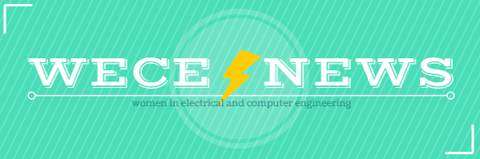

SEPTEMBER 4 - SEPTEMBER 11
NEWS
JOIN A COMMITTEE
Apply here if you're interested in becoming more involved with any of the amazing committees in WECE. The application closes on Friday, September 8th.
DESIGN ASSISTANT OPENING
If you are interested in learning more about design, we have an opening for a design assistant to our Creative Design Director. This is a role comparable to a committee member however there is only one opening. We are looking for someone to shadow the Creative Design Director position and collaborate on design work. There will be a lot of inter-committee collaborations because of the nature of the design role and, while prior design software experience is desirable, it is not required. Please contact Ying Chen at ychen250@illinois.edu for more information.
EVENTS
LGS INNOVATIONS TECH TALK
WECE would like to invite you to the LGS Innovation Binary Software Update Tech Talk presented by the LGS interns from UIUC!
"LGS Innovations delivers mission-critical communications products, R&D, and supporting services to U.S. defense, intelligence, and civilian agencies, state and local governments, critical infrastructure operators, telecommunications and service providers, and other commercial customers around the world. We create advanced solutions in wireless communications, signals processing and analysis, optical networking, photonics, routing and switching, and spectrum management."
Papa Dels will be served! Find out more on our Facebook event here.
Where: ECEB 1013
When: Tuesday, September 5th, 5:30PM-6:30PM
FRESHMEN/TRANSFER BOARD GAME NIGHT
Come hang out with WECE and meet other new members! This is a great way to kick off the new year and make friends that you will see time and time again at WECE events and in your committees. We will have an assortment of board games, cards, and pizza!
Where: ECEB 2015
When: Wednesday, September 6th, 7PM-8:30PM
MINI ADVENTURE CODING JAM SPONSORED BY WORKIVA
Do you like coding, teamwork, games, pizza? Workiva is sponsoring a fun Mini Adventure Coding Jam for teams of 1-3 people. They can try their hand at an online coding game and compete for a drone and other prizes. Food will be provided. Bring your laptop or tablet!
Where: ECEB 3002
When: Thursday, September 7th, 7:30PM-10:30PM
TASTY TUESDAY
Come hang out with WECE in an informal setting. Do your homework, paint your nails, build a robot… the possibilities are endless. Snacks provided! Please fill out this WhenIsGood form to figure out the best time for everyone!
Where: ECE RSO Office
When: Tuesday, September 11th
SCIFI MOVIE NIGHT
Netflix and chill with WECE. Movies with be decided by attendees (as long as it's sci-fi and on Netflix, it's fair game!) Popcorn and other movie snacks provided!
Where: TBD
When: Thursday, September 14th, 5PM-8PM
SOLDERING WORKSHOP: CRITTER CREATIONS
Interested in soldering but don't know where to start? Come learn this crucial hardware skill with WECE! In the process, you will get the opportunity to create a fun crawling critter! Beginners encouraged to attend!
Where: TBD
When: Monday, September 18th, 6PM-7PM
54 STARTUP WEEKEND
Are you passionate about solving problems? Are you looking for a platform to collaborate with people on the next best idea? Founders' annual startup weekend, 54, is back for its 5th year! It is a 3-day event where students from all across campus come together to pitch ideas, form teams, and spend the weekend turning those ideas into startups. Join us from September 22nd - September 24th at Thomas. M. Siebel Center for Computer Science for a weekend full of inspirational ideas, networking with professionals from the industry/VC firms and academia, and cash prizes, food, drinks, and more! You take care of your startup idea, we will take care of you. Apply at http://bit.ly/2vj4jPl and find out more at www.54.io. Applications are due by Friday, September 15th. Questions? Email us at team@54.io.
Where: Thomas. M. Siebel Center for Computer Science
When: Friday, September 22nd - Sunday, September 24th
BE PROFESSIONAL
Please join us for a night of food, networking, and professional workshops at SWE's annual Be Professional dinner, co-hosted by SHPE and WECE. This year's event will take place on September 25th from 5-8pm in the Illini Union Ballroom and will feature representatives from Molex, BP, and John Deere. Registration is now open here and runs through Wednesday, September 20th. For further information, please contact April Shewry at ashewry2@illinois.edu. We look forward to seeing you there!
Where: Illini Union Ballroom
When: Monday, September 25th, 5PM-8PM
ENGINEERING EMPLOYMENT EXPO
The Fall Engineering Employment EXPO will take place September 25-26 from 10am-4pm at the ARC. Representatives from various companies will be on campus to speak to candidates for internships, co-ops, and full time positions! This is an event you do not want to miss! Need more info? Check out our website OR check out our Facebook page for constant updates.
Where: ARC
When: Monday & Tuesday, September 25th-26th, 10AM-4PM
  

|